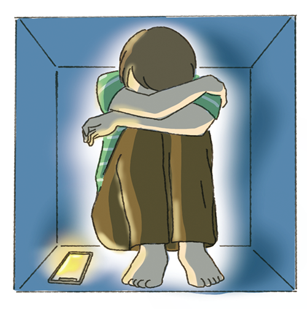

대단원 마무리세상과 벽을 쌓고 살아가는 청소년들
자료 1 “세상이 두려워요.” 은둔 청년, 전국에 51만 명
 고립 청소년이란 다른 사람과의 관계망이 없거나 거의 없는 외부적 고립 상태이거나, 사회적 관계망에서 고독감과 외로움을 느끼고 있는 내부적 고립 상태인 청소년을 의미한다. 은둔 청소년은 긴 시간 동안 밀폐된 공간에서 생활하여, 외부와 단절하고, 정상적인 삶을 살아가는 데 어려움을 겪는 청소년 을 말한다. 고립·은둔 청소년은 다른 사람에 비해 우울과 자살 생각 등을 경험할 가능성이 높고, 어려움에 처했을 때 고민을 나눌 사람이 없는 경우가 많다. 전문가들은 고립·은둔 청 소년이 더 늘어나고 이 상태가 계속되면 개인의 위기는 물론 공동체의 위기를 불러올 수 있다고 경고한다.
- 『조선일보』, 2021. 10. 12.
대단원 마무리세상과 벽을 쌓고 살아가는 청소년들
자료 2 “은둔은 선택한 것이 아니라 내몰린 것입니다. 자책하지 마세요, 탈출할 수 있어요.”
서울에 사는 정 씨는 집안 사정으로 어린 시절부터 홀로 있을 때가 많았다. 자주 못 보는 아버지는 올 때 마다 폭언을 해서 집안을 공포 분위기로 만들었다. 돌봐 주는 사람이 없는 상황에서 게임 중독에 빠졌던 정 씨에게 중학교 1학년 때 우울증이 찾아왔다. 이듬해부터 등교를 거부하고 커튼을 친 채 방 안에 틀어박혔 다. 하루에 12시간씩 잠을 자고, 눈을 뜨면 방 안에서 컴퓨터로 게임을 하거나 온종일 영화나 드라마를 봤 다. 오직 화장실 갈 때나 배가 고플 때만 방문을 열었다. “밖에 나갔다가도 ‘나는 특별한 사람이 아니구나.’, ‘나는 쓰레기구나.’ 하는 생각에 괴로워서 다시 방에 숨었다.”라고 말했다.
- 『중앙일보』, 2022. 12. 24.
대단원 마무리세상과 벽을 쌓고 살아가는 청소년들
● 위 사례를 읽고 고립·은둔 청소년에 대해 우리가 가져야 할 태도가 무엇인지 생각해 보자.
-
1 고립·은둔 청소년이 세상과 벽을 쌓고 살아가는 까닭은 무엇일까?
가정에서의 불화나 학교 폭력으로 인한 상처 등으로 다른 사람과의 소통을 거부하기 때문이다.
정답 -
2 고립·은둔 청소년 문제에 관심을 가져야 하는 까닭은 무엇일까?
고립·은둔 청소년은 고립·은둔 청년으로 성장할 위험이 높으며, 이렇게 고립·은둔 청소년과 청년의 수가 점차 증가하면 개인의 위기뿐만 아니라 공동체의 위기도 불러올 수 있기 때문이다.
정답 -
3 고립·은둔 청소년에게 건네고 싶은 말 한마디를 써 보자.
너의 잘못이 아니야. 우리 함께 용기를 내서 세상으로 한 걸음을 디뎌 보자.
정답
대단원 마무리우리의 마음속 외로움 돌보기
● 나는 어떤 상황에서 외로움을 느낄까? 내 안의 외로움을 들여다보고, 우리 모두의 마음속 외로움을 돌볼 수 있는 활동 프로그램을 기획하고 실천해 보자.
1단계스스로 되돌아보기
-
1 나는 어떨 때 외로움을 느끼며, 외로움에 어떻게 대처하고 있을까?
학교를 마치고 집에 돌아왔는데 집안에 아무도 없을 때 외로움을 느낀다. 그럴 때는 이어폰을 끼고 내가 좋아하는 가수의 음악을 들으며 외로움에 대처한다.
정답 -
2 외로움으로 힘들어하는 친구에게 가장 필요한 도움은 무엇일까?
힘든 점을 편하게 이야기할 수 있는 친구가 필요할 것 같다.
정답
대단원 마무리우리의 마음속 외로움 돌보기
2단계 기획서 작성하기
“너만의 비밀 친구가 되어 줄게.”
사회 관계망 서비스에 익명의 대화방을 개설한다. 힘들 때 대화방에 고민을 편하게 털어 놓을 수 있다.
자신의 신상이 드러나는 것을 꺼리는 학생이 있을 수 있으므로, 개인의 정보와 관련된 질문은 하지 않도록 미리 약속을 정한다.
대단원 마무리우리의 마음속 외로움 돌보기
3단계 활동 소감 나누기
• 프로그램 기획이 완료되었다면 모둠별로 프로그램을 직접 실행해 보고 소감을 나누어 보자.
| 느낀 점 |
|
|---|---|
| 좋았던 순간 |
|
| 보완해야 할 점 |
|